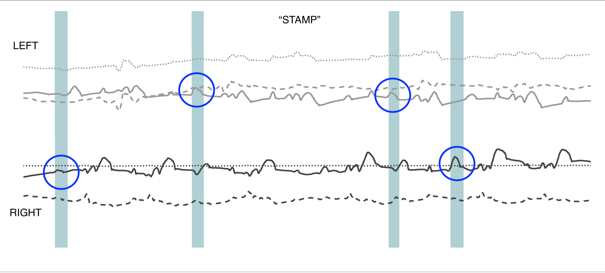
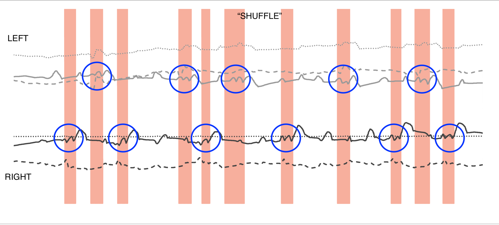
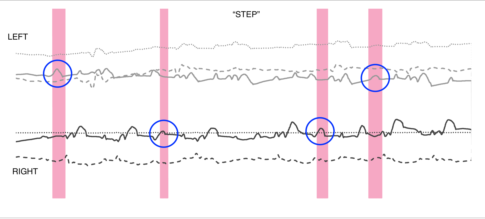
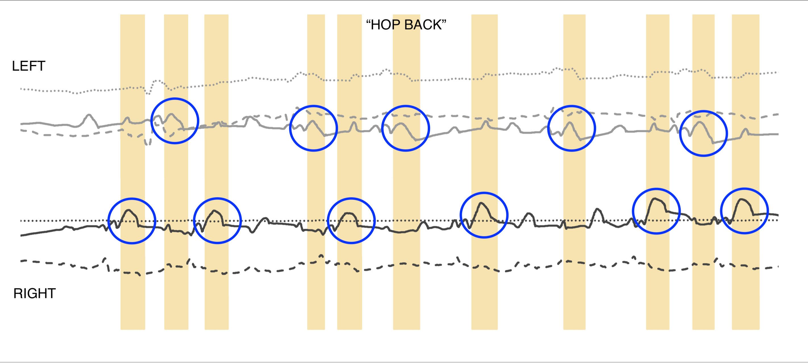

My final project relates directly to my dissertation research on Irish dancers and the unique (and very musical) ways that they learn, remember, and communicate their dance steps. One technique that dancers use is hand dancing: dancers use their hands or fingers to mimic complex footwork choreography. The goal of this project was to create a pair of gloves that would collect movement information that could then be analyzed and manipulated to examine parameters such as rhythmicity, style, and which could be visualized in a way that can communicate this movement behavior independent of the use of video. The DanceGlove measures whole hand movements and proximity between the left and right hands (using IMU and Photoresistive sensors), and it also measures fine motor movements of the index and middle fingers on the right hand (using flex sensors and a circuit switch).
The gloves use IMU and proximity sensors to measure movement information. Within the code, I wrapped the accelerometer and gyroscope data into a Madgwick filter so that it would produce values for pitch, yaw, and roll. I then analyzed this output for patterns. For both the right and left hands, the yaw data was mostly noise. This is not surprising as both hands stay pointed in mostly the same direction throughout a dance. The pitch information yielded the most obvious visual patterns, with the roll acting almost like a shadow to the pitch.
I used a basic switch-based circuit to sense when the index finger and middle finger made contact with the thumb. I also used flex sensors that covered the joints of each of these fingers. This data was a little more unwieldy than the IMU data. I believe that this information would be best parsed by a machine learning program. Nevertheless, I pursued some rudimentary visualizations in p5 to see if I could gain any interesting insights. While it was fun to play around with different triangles, the real-time graphic changes were not particularly informative.
When appropriate, specific techniques are hyperlinked to tutorials. To create this project, you will need to crochet or embroider basic stitches, hand sew, use a sewing machine (though you could substitute hand sewing if you are patient), solder electronics, and follow along some basic circuitry and programming.
SAFETEY FIRST!
SEWING MATERIALS & TOOLS
ELECTRONICS
PATTERN & GLOVE
Follow this method for making patterns and constructing gloves for the right and left hands. Or, buy gloves. If you do the latter, you’ll need to attach two channels of elastic fabric to the index and middle fingers of the right hand.
SEW THE FINGER PADS
On the right hand glove only there are three finger pads. Put on your glove and hold the index and middle fingers against the thumb in a pinching fashion. Note where the fingers touch. Mark these with a piece of tape and remove the glove.
There are many ways to create finger pads. This tutorial is useful if you want to make finger pads from conductive fabric. My method will explain how to do this using crochet and embroidery of conductive thread. In both cases, the finger pads will be attached to the glove as appliqué.
Crochet the two finger pads:
Embroider the thumb pad:
Appliqué the finger pads:
CREATE THE MICROCONTROLLER BASES
I did not want to sew a microcontroller directly onto a relatively thin and stretchy glove for multiple reasons. First, the fabric stretches and so not only could the microcontroller put a strain on the fabric itself, but it would also likely move around with the glove. Second, I wanted a little cushion between the soldered ends of the microcontroller and the back of my hand. Using a non-stretch cotton fabric with a felt liner created a stable and durable base for the microcontroller.
Create the fabric base:
Attach to the gloves:
CREATE THE WRISTBAND
I actually did this step AFTER I assembled my circuitry onto my glove, which was a mistake. I ended up overhandling the glove and as I quickly discovered, it is not very durable. So if I did it over again, I would make the wristbands after attaching the micrcontroller "pillows." The wristband helps to keep the glove in place and can also serve as a future location for an external power supply.
CREATE THE FLEX SENSORS
I followed Andrew's method for creating a DIY flex sensor. Here is what I did:
ARRANGE THE CIRCUITRY AND TEST
In creating a wearable, it's important to keep things small, light, and durable. The built-in IMU and many other sensors on the Nano 33 BLE Sense made things much easier because I had many fewer components to connect. This meant that the left hand glove essentially consisted of the microcontroller. The right hand glove, however, required some more complex planning to connect the tap sensors and the flex sensors in a small space.
After testing the circuits for the tap sensor and the flex sensors separately, I diagrammed the total circuit plan and then tested the connections out using hook test leads and a breadboard.
<
SOLDER
Testing out the circuitry also helped me prepare for soldering. I needed to solder many different connections, including to the microcontroller pins directly, 1:1 wire, 2:1 wire, and wire-resistor connections. I tried to limit all of my connections to a maximum of 2 splits per connection, with the exception of my triple voltage divider, where I soldered together all three resistors.
I started with the microcontroller and moved outward, using longer wire than necessary and trimming as I made new connections based on how they would lay out on the glove. I used various labels to keep myself organized. I persistently forgot to put my pieces of heat shrink on to the wires before creating new Y-solder joins, which meant I redid a lot of my work.
I rigged up a clothespin stage to help hold my various components in place during the soldering process.
I read a couple of tutorials from Adafruit, notably their beginner's guide to soldering and their tips for excellence in soldering. I also perused some YouTube on soldering before getting started to make sure that I would not destroy my microcontroller.
ATTACH CIRCUITRY TO GLOVE
Having mapped out the circuitry multiple times, it was fairly clear to me how the circuitry would lay on the glove. I started by sewing the microcontroller onto its little pillow for both the right and left hand gloves. The microcontroller has four corner holes that were very useful for this task. In the future, I may try using eyelet hooks to attach the microcontroller to make it easier to remove when I need to repairs.
I then inserted the flex sensors into the channels that I had sewed into the glove and tacked them down to the tips of the glove. I later also tacked the bottom portion of the flex sensor as the sensors were inching up the finger during use.
I then sewed the wires to the conductive pads by creating a little loop of exposed wire at the end of each and sewing that with conductive thread.
To finish, I tacked down the wires to keep them from flying all over the place. This ended up being not quite enough and I continually revised where I had sewed down the wires to balance flexibility with stability.
CODING THE MICROCONTROLLERS
I needed two sets of code for each glove. The left hand glove needed to be coded for IMU and proximity information and the right hand glove needed to be coded for IMU, proximity, two flex sensors, and the tap circuit. I started by assembling each coding component separately and then I stitched the code together. Much of this code I adapted from Arduino IDE examples and various tutorials (see the Proposal & Development page for more information about that process).
IMU CODE
I derived an IMU code sketch from this ITP tutorial. It uses a Madgwick filter to calculate pitch, yaw, and roll out of the accelerometer and gyroscope data (here's the academic paper explaining how it works).
#include "Arduino_LSM9DS1.h"
#include "MadgwickAHRS.h"
//initalize a Madgwick filter:
Madgwick filter;
//sensor's sample rate is fixed at 114 Hz:
const float sensorRate = 114.00;
//values for orientation:
float roll = 0.0;
float pitch = 0.0;
float heading = 0.0;
void setup() {
Serial.begin(9600);
//attempt to start the IMU:
if (!IMU.begin()) {
Serial.println("Failed to initialize IMU");
//stop here if you can't access the IMU:
while(true);
}
//start the filter to run at the sample rate:
filter.begin(sensorRate);
}
void loop() {
//values for acceleration and rotation:
float xAcc, yAcc, zAcc;
float xGyro, yGyro, zGyro;
//check if the IMU is ready to read
if(IMU.accelerationAvailable() && IMU.gyroscopeAvailable()) {
//read accelerometer and gyrometer:
IMU.readAcceleration(xAcc, yAcc, zAcc);
IMU.readGyroscope(xGyro, yGyro, zGyro);
//update the filter, which computes orientation:
filter.updateIMU(xGyro, yGyro, zGyro, xAcc, yAcc, zAcc);
//print the heading, pitch, and roll
roll = filter.getRoll();
pitch = filter.getPitch();
heading = filter.getYaw();
}
//print the filter's results:
Serial.print(heading);
Serial.print(",");
Serial.print(pitch);
Serial.print(",");
Serial.println(roll);
}
PROXIMITY
I used the Arduino example sketch for the on-board gesture sensor in the Arduino Nano 33 BLE Sense. The proximity sensor is basically a fancy photoresistive sensor.
/*
APDS9960 - Proximity Sensor
This example reads proximity data from the on-board APDS9960 sensor of the
Nano 33 BLE Sense and prints the proximity value to the Serial Monitor
every 100ms.
The circuit:
- Arduino Nano 33 BLE Sense
This example code is in the public domain.
*/
#include
void setup() {
Serial.begin(9600);
while (!Serial);
if (!APDS.begin()) {
Serial.println("Error initializing APDS9960 sensor!");
}
}
void loop() {
// check if a proximity reading is available
if (APDS.proximityAvailable()) {
// read the proximity
// - 0 => close
// - 255 => far
// - -1 => error
int proximity = APDS.readProximity();
// print value to the Serial Monitor
Serial.println(proximity);
}
// wait a bit before reading again
delay(100);
}
TAP CIRCUIT
The tap sensing code reads when the index finger, middle finger, both fingers, or neither finger were making contact with the glove. It does this using different resistor levels as thresholds.
// circuit has two switches. "index" has a 4.7kOhm resistor, "middle" has a 10kOhm resistor; thumb has voltage divider of 1kOhm.
unsigned long startMillis; //some global variables available anywhere in the program
unsigned long currentMillis;
const unsigned long period = 1000; //the value is a number of milliseconds
int tap = A2;
void setup() {
// put your setup code here, to run once:
Serial.begin(9600);
pinMode(tap, INPUT);
}
void loop() {
// put your main code here, to run repeatedly:
analogRead(tap);
if(analogRead(tap) >= 200) {
Serial.println("both");
}
else if(analogRead(tap) > 10 && analogRead(tap) < 100) {
Serial.println("middle");
}
else if(analogRead(tap) < 200 && analogRead(tap) > 100) {
Serial.println("index");
}
else if(analogRead(tap) < 10) {
Serial.println("none");
}
}
FLEX SENSORS
I used the flex sensor code that Andrew created and built that out to read two flex sensor readings.
const int flex1 = A4;
const int flex2 = A6;
int valflex1 = 0;
int valflex2 = 0;
void setup() {
pinMode(flex1, INPUT);
pinMode(flex2, INPUT);
Serial.begin(9600);
}
void loop() {
valflex1 = analogRead(flex1);
valflex2 = analogRead(flex2);
Serial.print(valflex1);
Serial.print('\t');
Serial.println(valflex2);
delay(10);
}
Integrating the Code
Once I had the individual code pieces, it was not difficult to stitch them together.
Download the code for the left hand (IMU and Proximity)
Download the code for the right hand (IMU, Proximity, Tap, and Flex Sensors).
P5 COMMUNICATION USING BLE
I built upon what I learned from Week 11 and Week 13 about using BLE to communicate between a microcontroller and p5. I decided to create code for p5 that focused entirely on the finger sensing, since I had already experimented with visualizing IMU data in those previous weeks. I modified the code that I had used before and after some frustrating debugging efforts, I was able to get the code to work. Like previously, I used the Chrome Web Server to load the p5 visualization from my own repo.
Some important changes included changing the BLECharacteristic nature from "Float" to "Int" (this had to happen on both the Arduino sketch and the p5 sketch). I also eliminated the threshold reading that parsed the tap information. I did this so that I could get more interesting results in p5, plus p5 seemed to have issues understanding that bit of data as it was being sent.
Arduino Code
//This code collects data from the thumb/tab sensor,
// and the two flex sensors on the index and middle fingers.
// This code is meant for the right hand glove for the fingers
#include "ArduinoBLE.h" //include the BLE library
//values for tap sensor
const int tap = A2; // pin assigned to read taps via thumb
int valtap = 0;
//int tapID = 0;
//values for flex sensors
const int flex1 = A4; // pin assigned to read flexing of index finger
const int flex2 = A6; // pin assigned to read flexing of middle finger
int valflex1 = 0;
int valflex2 = 0;
//BLE Service
BLEService danceService("19B10010-E8F2-537E-4F6C-D104768A1214"); // create service
// a characteristic for each of the accelerometer values x, y, z
BLEIntCharacteristic valtapCharacteristic("19B10013-E8F2-537E-4F6C-D104768A1214", BLERead | BLENotify);
BLEIntCharacteristic valflex1Characteristic("19B10014-E8F2-537E-4F6C-D104768A1214", BLERead | BLENotify);
BLEIntCharacteristic valflex2Characteristic("19B10015-E8F2-537E-4F6C-D104768A1214", BLERead | BLENotify);
void setup() {
Serial.begin(9600);
//declare pin modes
pinMode(tap, INPUT);
pinMode(flex1, INPUT);
pinMode(flex2, INPUT);
//attempt to start BLE:
if (!BLE.begin()) {
Serial.println("starting BLE failed!");
}
BLE.setLocalName("DanceGlove_Fingers");
BLE.setAdvertisedService(danceService);
danceService.addCharacteristic(valtapCharacteristic);
danceService.addCharacteristic(valflex1Characteristic);
danceService.addCharacteristic(valflex2Characteristic);
// add the service
BLE.addService(danceService);
// init all values to 0
valtapCharacteristic.writeValue(0);
valflex1Characteristic.writeValue(0);
valflex2Characteristic.writeValue(0);
BLE.advertise();
Serial.println("Bluetooth device active, waiting for connections...");
}
void loop() {
//poll for BLE events
BLE.poll();
//variable to tell if data was requested over serial;
bool ping = false;
//values for tap and flex sensors:
valtap = analogRead(tap);
valflex1 = analogRead(flex1);
valflex2 = analogRead(flex2);
//if you get a byte in the serial port, send latest data:
while(Serial.available()) {
Serial.read();
ping = true;
}
if (ping) {
//print the results:
Serial.print(valtap);
Serial.print(",");
Serial.print(valflex1);
Serial.print(",");
Serial.println(valflex2);
}
//update the characteristics if they have changed by more than 1:
if (abs(valtapCharacteristic.value() - valtap) > 1) {
valtapCharacteristic.writeValue(valtap);
}
if (abs(valflex1Characteristic.value() - valflex1) > 1) {
valflex1Characteristic.writeValue(valflex1);
}
if (abs(valflex2Characteristic.value() - valflex2) > 1) {
valflex2Characteristic.writeValue(valflex2);
}
}
p5 Sketch
// orientation variables, right
let valtap = 0.0;
let valflex1 = 0.0;
let valflex2 = 0.0;
/* initialize services we're looking for*/
//right
const serviceUuid = "19b10010-e8f2-537e-4f6c-d104768a1214";
const characteristicsUUID = {
valtap: "19b10013-e8f2-537e-4f6c-d104768a1214",
valflex1: "19b10014-e8f2-537e-4f6c-d104768a1214",
valflex2: "19b10015-e8f2-537e-4f6c-d104768a1214",
}
// Declare BLE Object + characteristics
let myBLE;
let valtapCharacteristic;
let valflex1Characteristic;
let valflex2Characteristic;
function setup() {
createCanvas(720, 500);
myBLE = new p5ble();
background("#FFF");
// make a button and give it a callback
const connectButton = createButton('Connect and Start Notifications')
connectButton.mousePressed(connectAndStartNotify);
}
function connectAndStartNotify() {
myBLE.connect(serviceUuid, gotCharacteristics);
//myBLE.connect(gattServiceUuid, gattCharacteristics);
}
function gotCharacteristics(error, characteristics) {
if (error) console.log('error: ', error);
console.log(characteristics[1].uuid);
for (let i = 0; i < characteristics.length; i++) {
if (characteristics[i].uuid == characteristicsUUID.button) {
buttonCharacteristic = characteristics[i];
myBLE.startNotifications(buttonCharacteristic, handleButton);
}
else if (characteristics[i].uuid == characteristicsUUID.valtap) {
valtapCharacteristic = characteristics[i];
myBLE.startNotifications(valtapCharacteristic, valtapCallback);
}
else if (characteristics[i].uuid == characteristicsUUID.valflex1){
valflex1Characteristic = characteristics[i];
myBLE.startNotifications(valflex1Characteristic, valflex1Callback);
}
else if (characteristics[i].uuid == characteristicsUUID.valflex2) {
valflex2Characteristic = characteristics[i];
myBLE.startNotifications(valflex2Characteristic, valflex2Callback);
}
else {
console.log("nothing");
}
}
}
function valtapCallback(data) {
console.log('valtap: ', data)
console.log(Number(data))
valtap = data;
}
function valflex1Callback(data) {
console.log('valflex1: ', data)
valflex1 = data;
}
function valflex2Callback(data) {
console.log('valflex2: ', data)
valflex2 = data;
}
function draw() {
// update the drawing:
background(255); // set background to white
//index finger triangle
stroke(0);
fill(valtap/2,valtap, 100);
triangle(180,300,270,valflex1,360,300);
//draw middle finger triangle
stroke(0);
fill(100, valtap, valtap/2);
triangle(360,300,450,valflex2,540,300);
}
P5 VISUALIZATION & FINGER DATA
The p5 sketch and associated arduino code was designed to visualize the tap sensor and flex sensor data. The sketch draws two triangles. The height of the triangles responds to the value of a flex sensor with the left side triangle corresponding to the index finger flex sensor and the right side triangle corresponding to the middle finger. The colors of the triangles changes depending on the value of the tap sensor. There are many more visualization possibilities, but I did not have time to explore them because of the time I spent debugging the BLE communication, as well as on repairing the glove each time I used it.
IMU DATA ANALYSIS OF HAND DANCING
I collected the pitch, yaw, and roll data using the serial monitor. Although the placement of the microcontroller on the gloves prevented the proximity sensor from being useful during hand dancing, it was very useful as a way of indicating when I needed to start paying attention to the data that was being sent from the gloves to the serial monitors. I simply covered the back of my hand while starting the serial monitor and again when unplugging the microcontroller from its power supply to indicate the beginning and end of the gesture sequence. For the data collection, I chose to start with a relatively basic Irish dance step called the "Bang Step." This step is composed of four basic movement motifs that can be clearly demarcated: "stamp", "step", "shuffle", "hop back". I collected data for each gesture individually, and also of the entire step choreography in sequence. By graphing the pitch, yaw, and roll information from both the right and left hands, I was able to identify various points in the data that recurred and recurred in pattern, and therefore I identified what each of the movement motifs were.
An issue with parsing Irish step dancing choreography is that the movements elide together. The motifs of the "Bang Step" can be more or less clearly identified and the level of elision and thus modification of the gestures in context is low compared to other, more complex dance steps.




ISSUES TO BE RESOLVED
Proximity sensor
Durability
Rhythmicity and Duration
MACHINE LEARNING
Unfortunately, I didn't have the time to learn about and experiment with a machine learning model. Though I had read through tutorials on using TensorFlow to create gesture recognition, I hadn't realized that those tutorials glossed over the part about actually using TensorFlow. I quickly realized taht this would have to be something I commit serious time to going forward as I could barely understand the directions for downloading the program. It will be exciting to see the possibilities!
DATA VISUALIZATION
The visualization methods I utilized included p5 and Google Charts. Part of my hope was to use some visualization experimentation to see what I might learn from this movement data, as well as to find a way to express this movement information in a way that is legible to people who don't do Irish dance. I was surprised at how much I could glean from a basic line chart of IMU data (and to dust off some rusty chart editing skills)! My use of p5, however, was rudimentary, and I'd like to keep exploring the possibilities with that tool (or switch to a different visualization tool.
I used a tool provided by publicalbum.org to embed a Google Photos Album onto this webpage. To create my circuit diagram, I used the aptly named Circuit-Diagram.org.